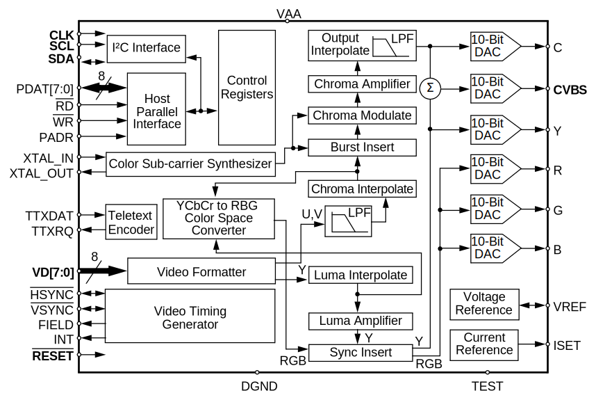
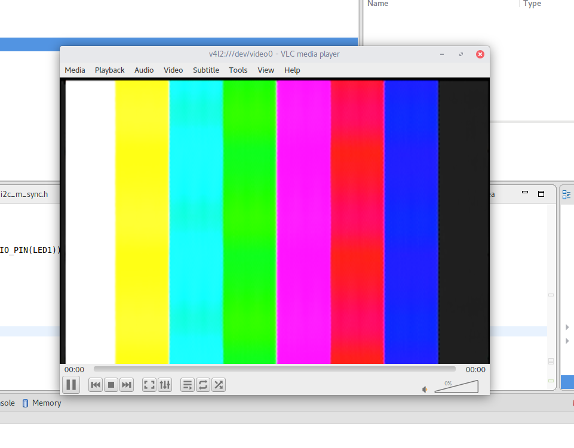

Getting started with the CS4954
The CS4954 is a long-obsolete NTSC/PAL Digital Video Encoder by Cirrus Logic. Despite being out of production, it is a nice chip, and is being used on the CLONE BUINO DUAL to drive the composite video output.

Hello world?
To get video output on the composite (CVBS) port with minimum effort, these are the steps to take:
- Apply power to the chip
- Provide 27MHz reference clock
- Via I2C, change the following control flags (preserve the defaults for other flags and other registers):
- CONTROL_0: Set MSTR=1 (Master Mode)
- CONTROL_4: Set COMDAC_PD=0 (composite DAC: power up)
- CONTROL_5: Set EN_COM=1, LOW_IMP=1 (enable composite DAC, enable composite output)
- CONTROL_3: Set CBAR=1 (enable internal color bar generator)
- Note that the default output format is NTSC-M ITU-R.BT601. If this is not what you want, you can consult Table 4 of the datasheet which describes register configuration for other formats.
Tip: you might want to make use of cs4954.h.
That should be enough to get you the familiar color bars:

Another thing to try is to set CBAR=0 and then varying the BKG_COLOR register. You should get a screen filled with a solid color that changes accordingly. The BKG_COLOR register is encoded as a 3:3:2-bit RGB value, no need to worry about any YCbCr bullshit.
Thanks to Master Mode, we don’t have to worry about providing any synchronization signals – everything is taken care of internally.
Next steps
Color bars are a nice start, but what if we want to display our own picture? For this, we need to first gain understanding of the input format(s) understood by the video encoder. In fact, with the CS4954, we have 2 choices of input encoding:
ITU-R BT.601 (spec)
In this mode, the inputs go in as 8-bit words in the pattern Cb–Y1–Cr–Y2. This pattern repeats 360 times during the visible part of a scanline, yielding 720 pixels of luminance resolution and 360 pixels of chrominance resolution. This is also known as 4:2:2 chroma subsampling.
Conversion between the RGB and YCbCr color spaces is conceptually simple, but requires matrix multiplication, which is not a problem on PC, but can be tricky or expensive in embedded systems. The coefficients can be found here. Note the “interesting” ranges of values: 16–235 for Y, 16-240 for Cb and Cr. Legend says that these have something to do with analog representation of the signals and under/overshoot concerns.
The CS4954 gives us a choice of a Master or a Slave mode. In Master mode, the chip generates HSYNC & VSYNC signals and provides them as digital outputs; conversely, to use Slave Mode, HSYNC and VSYNC must be fed to the video encoder along with pixel data.
Timing
In NTSC (interlaced) mode, a frame consists of 2 fields. You get 29.97 frames, so 59.94 fields per second. One frame consists of:
3 blank lines ( 1.. 3)
3 VSYNC lines ( 4.. 6)
15 blank lines ( 7.. 21)
240 picture lines ( 22..261)
4.5 blank lines (262, 263, 264, 265 + 1st half of 266)
3 VSYNC lines (middle of 266 .. middle of 269)
15.5 blank lines (2nd half of 269 + 270..284)
240 picture lines (285..524)
1 blank line (525)
The numbers in brackets are 1-based and inclusive.
As for horizontal timing:
128 HSYNC cycles ( 1.. 128)
116 blank cycles ( 129.. 244)
1440 pixel cycles ( 245..1684) encoding 720 horizontal pixels
32 blank cycles (1685..1716)
A quick verification: 1716 * 525 * (30 / 1.001) = 27,000,000 cycles per second, which is exactly the reference frequency used by the CS4954.
ITU-R BT.656 (spec)
The BT.656 spec is freely available, but I found the wording just a little bit ambiguous. On the other hand, the application note from Intersil (mirrored here) is crystal clear and presents data in a format useful for encode implementation.
BT.656 encodes pixel data in the same way as BT.601, but it also embeds synchronization in the data stream instead of requiring additional discrete signals. The vertical timing becomes much simpler, with no silly half-lines:
21 blank lines ( 1.. 21)
240 picture lines ( 22..261)
23 blank lines (262..284)
240 picture lines (285..524)
1 blank line (525)
As for horizontal timing:
4 EAV cycles [FF, 00, 00, XY]
268 dummy cycles [80, 10, ...]
4 SAV cycles [FF, 00, 00, XY]
1440 pixel cycles [Cb, Y1, Cr, Y2]
yielding the same grand total of 1716 cycles/line.
The XY word is a bit more involved: from MSB to LSB its 8 bits read as 1FVHPPPP. Fortunately, we can pretty much ignore the meaning of the individual bits, thanks to this handy decoding table:
| Line number, 1-based, inclusive | F | V | H (EAV) | H (SAV) |
|---|---|---|---|---|
| 1-3 | 1 | 1 | 1 | 0 |
| 4-20 1 | 0 | 1 | 1 | 0 |
| 21-263 | 0 | 0 | 1 | 0 |
| 264-265 | 0 | 1 | 1 | 0 |
| 266-282 | 1 | 1 | 1 | 0 |
| 283-525 | 1 | 0 | 1 | 0 |
And what about PPPP? These bits encode 4-bit parity which allows correction of any single-bit error no one seems to care about, at least for inter-IC applications. Again, you can find more details in the Intersil application note.
Since BT.656 mode needs 2 pins fewer than BT.601, it should be the more convenient way forward.
This background should be enough to generate a valid BT.656 stream from our FPGA. Next time.
Open questions
- Is there a drop-in replacement chip with better availability?
Footnotes
-
Beware that the BT.601 spec says that the odd-field vertical sync flag should last up to and including line 19, not 20. In practice, this difference does not seem to cause any issues; in fact, it seems that every revision of the standard changes this number somewhat randomly. ↩